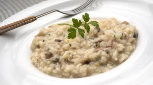

Mushroom risotto recipe

Description
Preparation of a mushroom risotto, we will need ingridients and to follow some steps
you can read about these to right below! (we assume you already have salt and pepper)
Ingridients
- 1 envelope of Gourmet Dehydrated Mushrooms
- 400 ml of water
-
1 sachet of Gourmet Vegetable Powdered Broth
- 2 tsp of olive oil
- 1 onion, diced small
- 1 tsp Gourmet Thyme Leaves
- 400g of cleaned and sliced mushrooms
- 500g of rice
- 200 ml of white wine
- 1 tsp Gourmet Sea Salt, Garlic and Parsley
-
1 tbsp salted butter
- 50g grated Parmesan cheese
- Gourmet Ground Black Pepper to taste
Steps
- In a bowl, hydrate the dehydrated mushrooms for at least 30 minutes in 1/2 of cold water or white wine.
- Strain the broth and add it to a pot along with 400 ml of water. Add the Vegetable Broth Powder, stir, and cook over low heat.
-
In a large pot, heat the olive oil, then add the onion and cook until soft and translucent. Add the chopped rehydrated mushrooms and thyme leaves and cook for one minute.
- Add the mushrooms and cook until soft.
- Add the rice and cook, stirring, over medium heat for approximately 5 minutes or until the rice turns opaque white.
- Add the white wine and cook until completely absorbed.
- Add the sea salt, garlic, and parsley, and gradually add the hot broth, one cup at a time. Wait until all the broth is absorbed before adding the next cup. Stirring is not necessary, but it is necessary to do so frequently.
- After 15 minutes, start tasting the rice, as it should be al dente. The total cooking time is 18 to 20 minutes.
-
Once the rice is ready, turn off the heat and add the butter, grated Parmesan cheese, and ground black pepper. Stir to combine well and serve immediately.
ENJOY!
Home